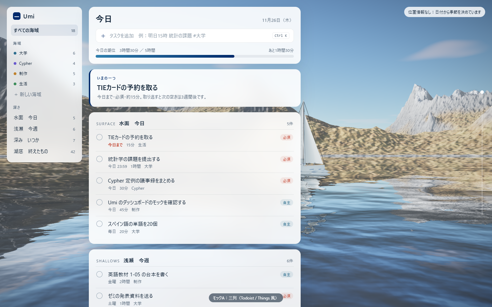
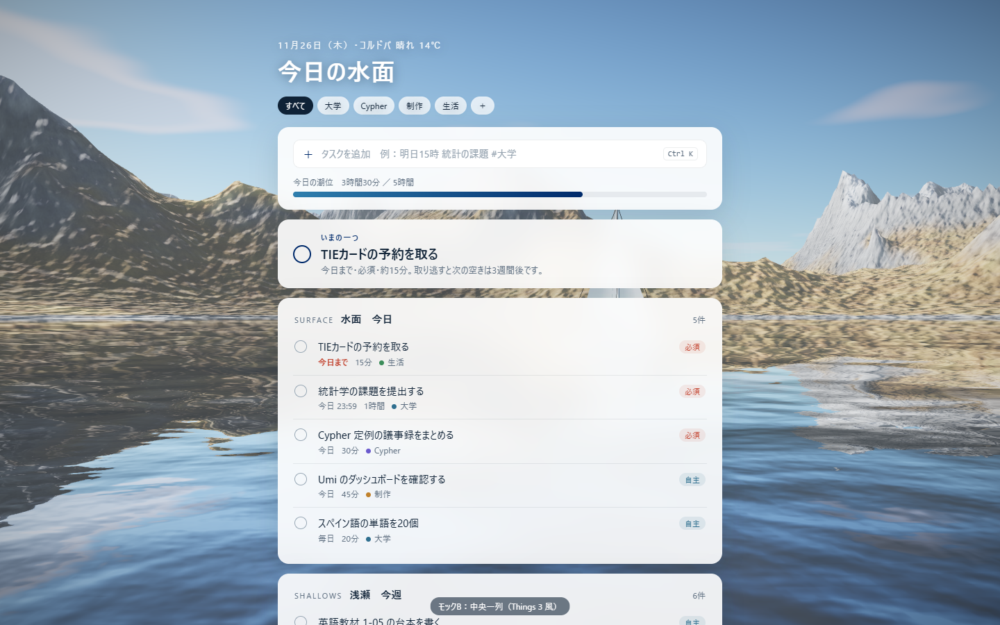
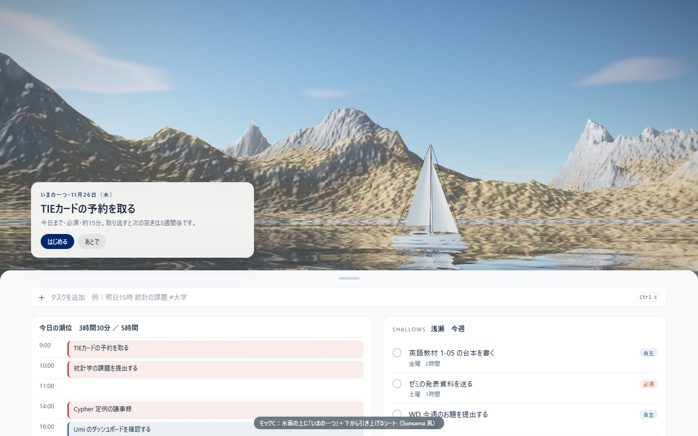
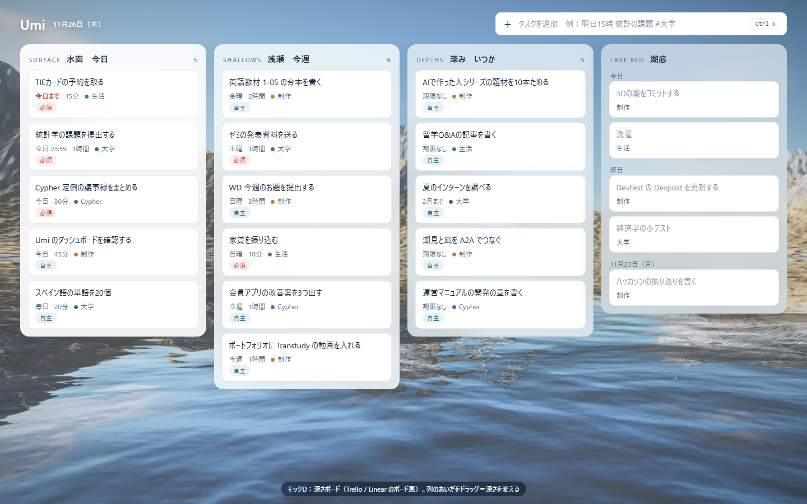
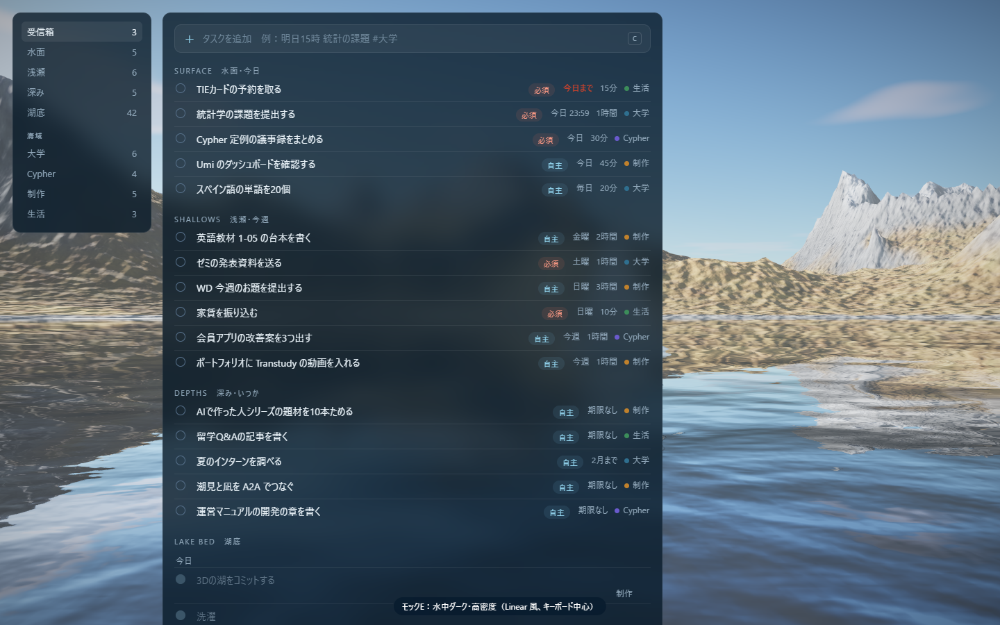
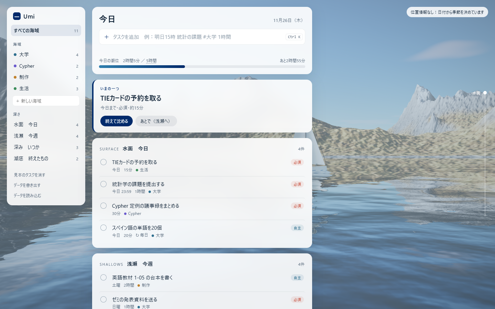

2026年11月26日、あなたが寝ている間に作りました。どの案も、背景は前回作った3Dの湖そのものです。各案の「動くモックを開く」から、スクロールして潜る様子も見られます（見本のデータで、ボタンは動きません）。
| 案 | 読みやすさ ×3 | コンセプトに合うか ×2.5 | 静けさ ×1.5 | 使い慣れた操作 ×2 | スマホ ×1 | 合計（100点） |
|---|---|---|---|---|---|---|
| A 三列 | 9 | 8 | 9 | 9 | 4 | 82.5 |
| B 中央一列 | 8 | 9 | 9 | 7 | 8 | 82.0 |
| C 水面＋シート | 9 | 5 | 8 | 8 | 7 | 74.5 |
| D 深さボード | 8 | 6 | 6 | 7 | 3 | 65.0 |
| E 水中ダーク | 6 | 5 | 7 | 8 | 5 | 62.0 |
重みの理由：以前の Umi は「見づらい」で3回作り直したので、読みやすさを一番重くしました。次が「スクロール＝潜る」「終えたら沈む」というコンセプト、その次が Todoist や Things に慣れた人が迷わないかです。A と B は僅差なので、PC では A、スマホでは B の形にして両方の良いところを取りました。

左に海域と深さの一覧、まんなかにタスク、右に湖が見える。
○ 文字は白い面の上だけ。海域が増えても左の列に収まる。見慣れた形で迷わない。
× そのままだとスマホで左の列が場所を取る → スマホではBの形に切り替えて解決。
動くモックを開く
まんなかに一列だけ。両側に湖が広く見える。海域は上のチップで切り替え。
○ 「下へスクロール＝潜る」が一番自然に感じられる。スマホにそのまま合う。
× 海域が10個を超えるとチップが並びきらない。見出しの白い文字は景色の明るさに左右される。
動くモックを開く
上は湖と今やる1件だけ。下のシートに時間割と一覧。
○ 開いた瞬間が一番きれいで、今やることが1つに絞られる。時間割が分かりやすい。
× シートが湖を隠すので、潜る演出がほぼ見えない。時間割は予定を入れる手間が増える。
動くモックを開く
水面・浅瀬・深み・湖底を横に4列。カードを列のあいだで動かす。
○ 全体を一目で見渡せる。ドラッグで深さを変えるのが直感的（→ 採用案に取り入れた）。
× 深さが横に並ぶので「潜る」感じがしない。カードが多くて静けさに欠ける。スマホで横スクロールになる。
動くモックを開く
暗い半透明の面に、1行ずつ詰めた一覧。キーボードで全部できる。
○ たくさんのタスクを一度に見られる。キーボード操作が速い（→ 採用案に取り入れた）。
× 最初から暗く、水面から潜る流れがない。文字が小さく、長く見ると疲れる。
動くモックを開く
確かめたこと：入力の読み取り5例、沈める・元に戻す・くり返しの次の回、再読み込み後の保存、編集、キーボード、ドラッグで浅瀬へ移す、スマホ幅（横にはみ出さないこと）。
まだのこと：Firestore への保存（つなぐか聞く前に寝たので、ブラウザ保存にしました）、潮見（重み付けのエージェント）との連携、実機のスマホでの確認、内蔵ブラウザ以外での滑らかさの確認。